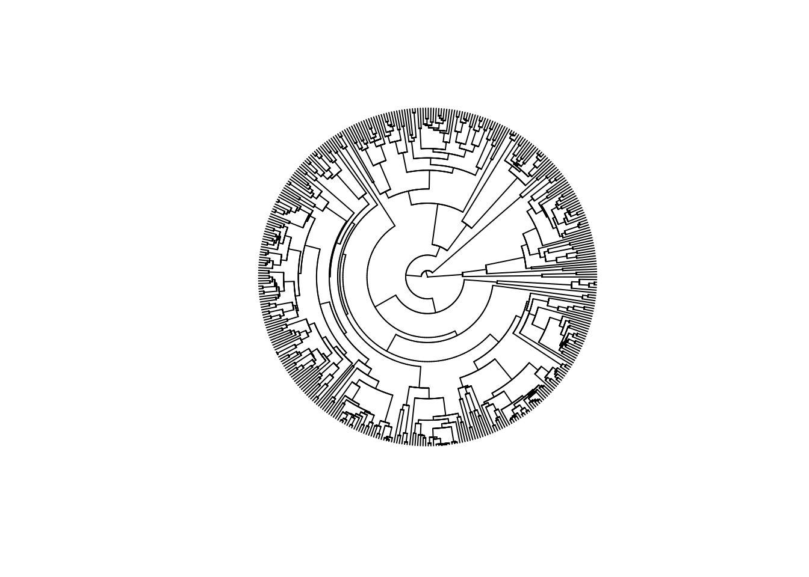
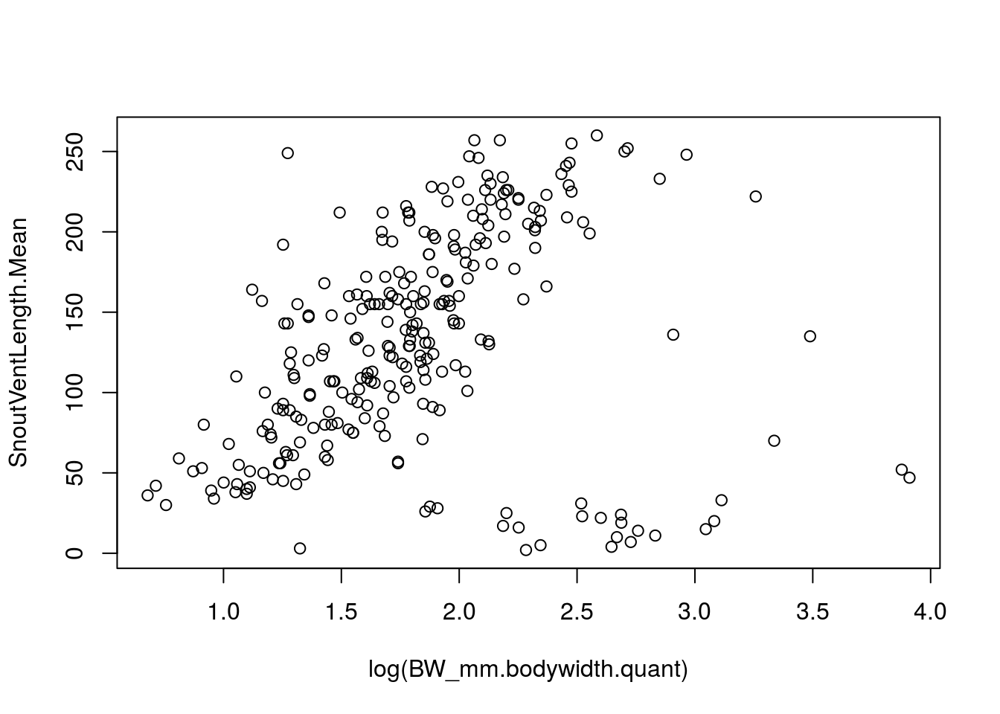
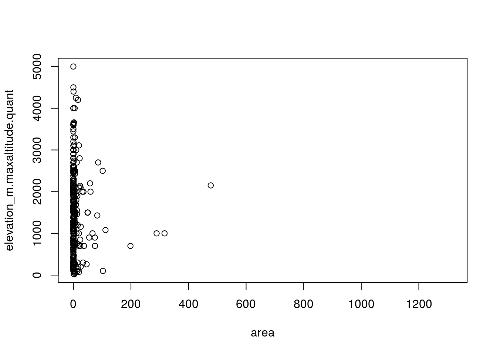
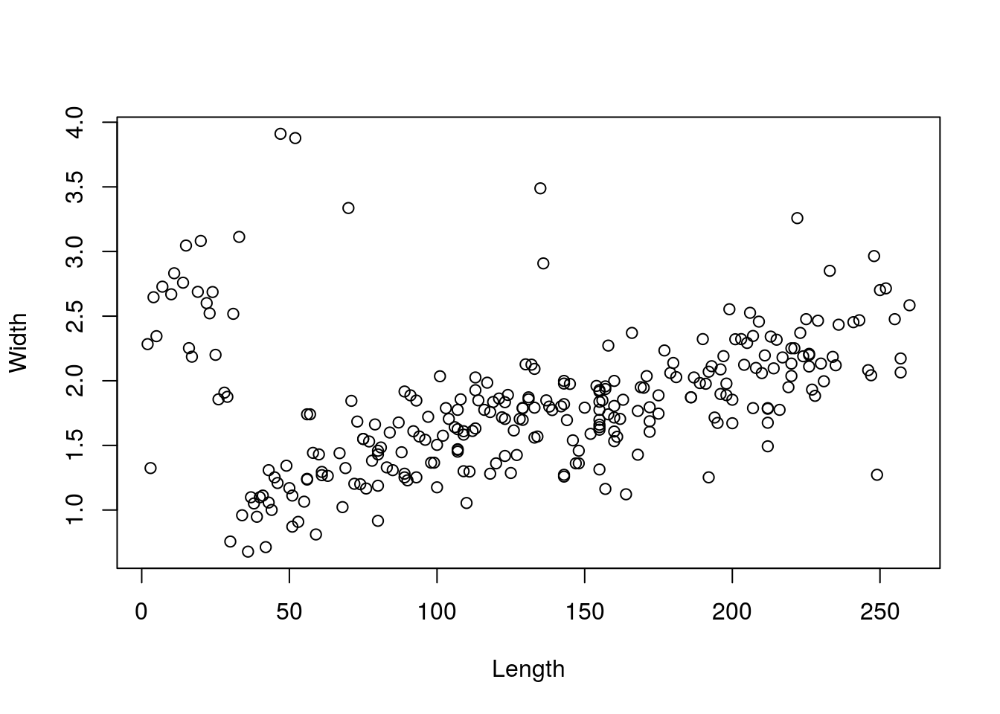
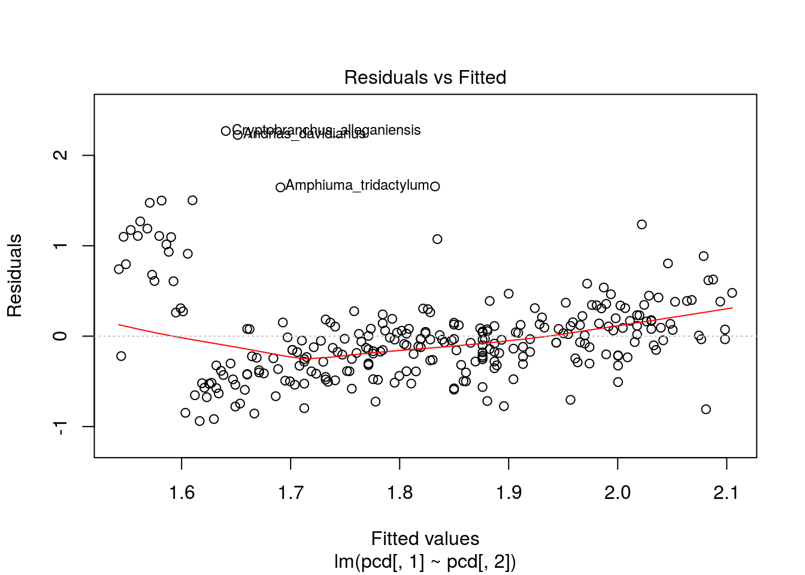
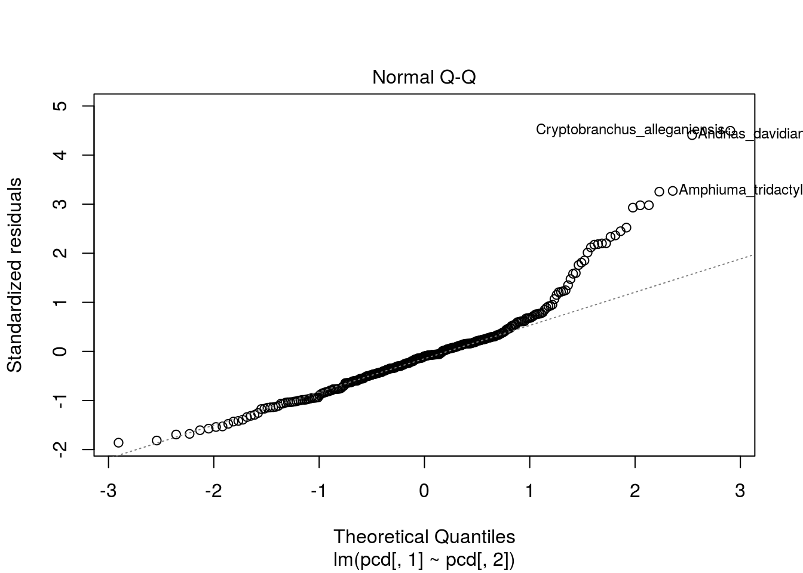
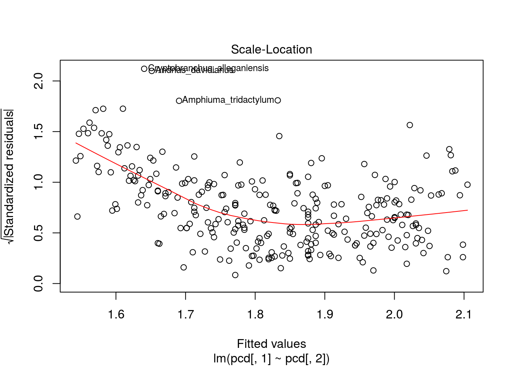
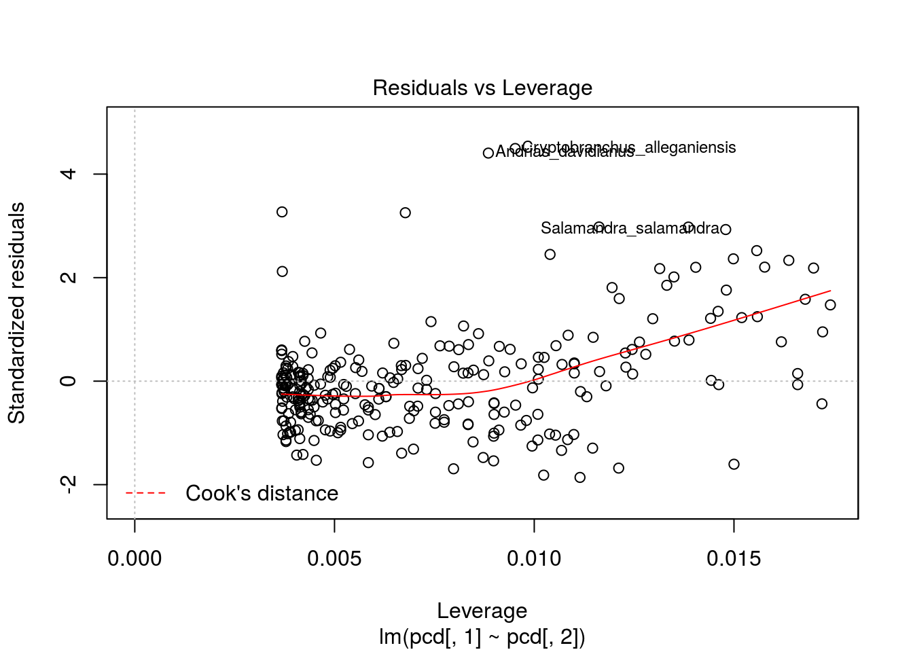
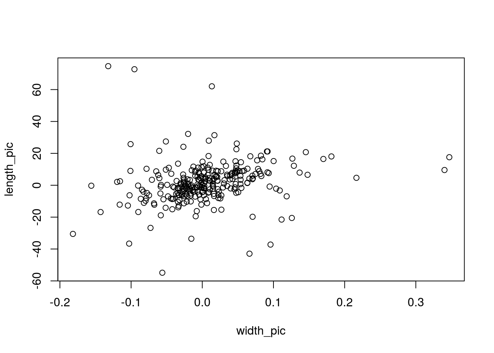
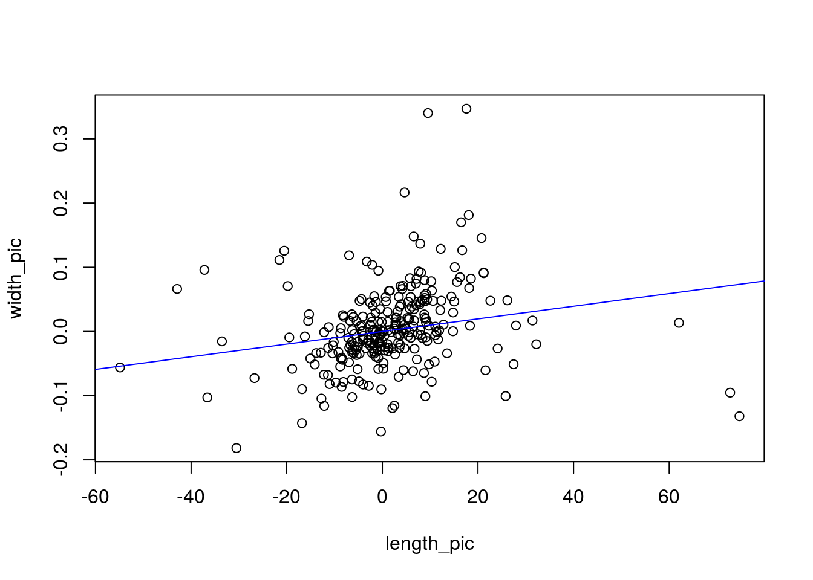

Austins Data
Load in and prep data
require(ape)## Loading required package: aperaw_data<-read.csv("~/Classes/fa17/pcm/Caud/Caudata_PhyloComp_Data.csv")
cd<-raw_data[,-1]
rownames(cd)<-raw_data[,1]
ct<-read.nexus("~/Classes/fa17/pcm/Caud/caud.ultra.nexus")
require(geiger)## Loading required package: geigername.check(ct, cd)## $tree_not_data
## [1] "Ambystoma_tigrinum" "Desmognathus_conanti"
## [3] "Desmognathus_planiceps" "Eurycea_aquatica"
## [5] "Haideotriton_wallacei" "Hydromantes_ambrosii"
## [7] "Hydromantes_flavus" "Hydromantes_genei"
## [9] "Hydromantes_imperialis" "Hydromantes_italicus"
## [11] "Hydromantes_strinatii" "Hydromantes_supramontis"
## [13] "Hynobius_fuca" "Hynobius_glacialis"
## [15] "Ixalotriton_niger" "Ixalotriton_parvus"
## [17] "Lineatriton_lineolus" "Lineatriton_orchileucos"
## [19] "Oedipina_kasios" "Oedipina_leptopoda"
## [21] "Oedipina_quadra" "Pachytriton_labiatus"
## [23] "Paradactylodon_gorganensis" "Paradactylodon_mustersi"
## [25] "Paradactylodon_persicus" "Paramesotriton_guangxiensis"
## [27] "Paramesotriton_zhijinensis" "Plethodon_chattahoochee"
## [29] "Plethodon_chlorobryonis" "Plethodon_grobmani"
## [31] "Plethodon_mississippi" "Plethodon_ocmulgee"
## [33] "Plethodon_savannah" "Plethodon_variolatus"
## [35] "Pleurodeles_nebulosus"
##
## $data_not_tree
## character(0)pruning<-treedata(ct, cd)## Warning in treedata(ct, cd): The following tips were not found in 'data' and were dropped from 'phy':
## Ambystoma_tigrinum
## Desmognathus_conanti
## Desmognathus_planiceps
## Eurycea_aquatica
## Haideotriton_wallacei
## Hydromantes_ambrosii
## Hydromantes_flavus
## Hydromantes_genei
## Hydromantes_imperialis
## Hydromantes_italicus
## Hydromantes_strinatii
## Hydromantes_supramontis
## Hynobius_fuca
## Hynobius_glacialis
## Ixalotriton_niger
## Ixalotriton_parvus
## Lineatriton_lineolus
## Lineatriton_orchileucos
## Oedipina_kasios
## Oedipina_leptopoda
## Oedipina_quadra
## Pachytriton_labiatus
## Paradactylodon_gorganensis
## Paradactylodon_mustersi
## Paradactylodon_persicus
## Paramesotriton_guangxiensis
## Paramesotriton_zhijinensis
## Plethodon_chattahoochee
## Plethodon_chlorobryonis
## Plethodon_grobmani
## Plethodon_mississippi
## Plethodon_ocmulgee
## Plethodon_savannah
## Plethodon_variolatus
## Pleurodeles_nebulosuspct<-pruning$phy
name.check(pct, cd)## [1] "OK"head(cd)## iucn_status.category population_trend.category
## Ambystoma_andersoni CR decreasing
## Ambystoma_barbouri NT decreasing
## Ambystoma_californiense VU decreasing
## Ambystoma_cingulatum VU decreasing
## Ambystoma_dumerilii CR decreasing
## Ambystoma_gracile LC stable
## TOTL_mm.totallength.quant SnoutVentLength.Mean
## Ambystoma_andersoni 235 140
## Ambystoma_barbouri 170 75.267
## Ambystoma_californiense 220 102.5
## Ambystoma_cingulatum 135 51.415
## Ambystoma_dumerilii 205 122
## Ambystoma_gracile 220 79.9335
## BW_mm.bodywidth.quant
## Ambystoma_andersoni NA
## Ambystoma_barbouri 8.133
## Ambystoma_californiense 14.100
## Ambystoma_cingulatum 5.900
## Ambystoma_dumerilii NA
## Ambystoma_gracile 11.900
## elevation_m.maxaltitude.quant cvalue.quant
## Ambystoma_andersoni 2000 NA
## Ambystoma_barbouri 300 NA
## Ambystoma_californiense 1200 32.0
## Ambystoma_cingulatum 100 29.5
## Ambystoma_dumerilii 1920 NA
## Ambystoma_gracile 3110 42.0
## ndiploid.count area frag lon
## Ambystoma_andersoni NA 5.257860e-04 1.0000000 -102.20972
## Ambystoma_barbouri NA 2.769358e+00 0.4486713 -85.56420
## Ambystoma_californiense NA 6.792483e-01 0.2377771 -121.45388
## Ambystoma_cingulatum NA 3.119059e+00 0.6656023 -82.52289
## Ambystoma_dumerilii NA 1.539524e-04 1.0000000 -101.63012
## Ambystoma_gracile 28 1.939970e+01 0.4550897 -126.88784
## lat DR Abs.Mol.Rate Volume
## Ambystoma_andersoni 19.75502 0.13946406 0.0004762878 NA
## Ambystoma_barbouri 37.47118 0.04704303 0.0016358247 3910.174
## Ambystoma_californiense 37.15783 0.03472722 0.0015071699 16004.863
## Ambystoma_cingulatum 31.21996 0.01019219 0.0011079862 1405.671
## Ambystoma_dumerilii 19.57350 0.06944087 0.0013591474 NA
## Ambystoma_gracile 50.96355 0.01492638 0.0014371805 8890.223plot(pct,show.tip.label=F,type='fan')
cd$SnoutVentLength.Mean <- as.numeric(cd$SnoutVentLength.Mean)Let’s try SVL and body width.
plot(SnoutVentLength.Mean~log(BW_mm.bodywidth.quant),data=cd)
Standard Regression
nonPhyloModel <- lm(SnoutVentLength.Mean~log(BW_mm.bodywidth.quant),data=cd)
summary(nonPhyloModel)##
## Call:
## lm(formula = SnoutVentLength.Mean ~ log(BW_mm.bodywidth.quant),
## data = cd)
##
## Residuals:
## Min 1Q Median 3Q Max
## -159.590 -38.710 4.808 50.757 137.037
##
## Coefficients:
## Estimate Std. Error t value Pr(>|t|)
## (Intercept) 67.026 14.131 4.743 3.41e-06 ***
## log(BW_mm.bodywidth.quant) 35.312 7.441 4.746 3.37e-06 ***
## ---
## Signif. codes: 0 '***' 0.001 '**' 0.01 '*' 0.05 '.' 0.1 ' ' 1
##
## Residual standard error: 64.58 on 270 degrees of freedom
## (129 observations deleted due to missingness)
## Multiple R-squared: 0.07699, Adjusted R-squared: 0.07357
## F-statistic: 22.52 on 1 and 270 DF, p-value: 3.373e-06anova(nonPhyloModel)## Analysis of Variance Table
##
## Response: SnoutVentLength.Mean
## Df Sum Sq Mean Sq F value Pr(>F)
## log(BW_mm.bodywidth.quant) 1 93932 93932 22.522 3.373e-06 ***
## Residuals 270 1126095 4171
## ---
## Signif. codes: 0 '***' 0.001 '**' 0.01 '*' 0.05 '.' 0.1 ' ' 1PIC
Getting rid of NA’s
getridof <- which(is.na(cd$BW_mm.bodywidth.quant))
pcd <- log(cd$BW_mm.bodywidth.quant)[-getridof]
pcd <- cbind(pcd,cd$SnoutVentLength.Mean[-getridof])
rownames(pcd) <- rownames(cd)[-getridof]
ppruning<-treedata(pct, pcd)## Warning in treedata(pct, pcd): The following tips were not found in 'data' and were dropped from 'phy':
## Ambystoma_andersoni
## Ambystoma_dumerilii
## Ambystoma_mexicanum
## Andrias_japonicus
## Batrachoseps_campi
## Batrachoseps_diabolicus
## Batrachoseps_gabrieli
## Batrachoseps_gavilanensis
## Batrachoseps_gregarius
## Batrachoseps_kawia
## Batrachoseps_nigriventris
## Batrachoseps_pacificus
## Batrachoseps_regius
## Batrachoseps_relictus
## Batrachoseps_simatus
## Batrachuperus_karlschmidti
## Batrachuperus_londongensis
## Batrachuperus_tibetanus
## Bolitoglossa_alvaradoi
## Bolitoglossa_epimela
## Bolitoglossa_equatoriana
## Bolitoglossa_flavimembris
## Bolitoglossa_mombachoensis
## Bolitoglossa_oaxacensis
## Bolitoglossa_sooyorum
## Bolitoglossa_zapoteca
## Calotriton_arnoldi
## Chiropterotriton_cracens
## Chiropterotriton_orculus
## Chiropterotriton_terrestris
## Cryptotriton_veraepacis
## Cynops_cyanurus
## Cynops_orientalis
## Cynops_orphicus
## Desmognathus_carolinensis
## Desmognathus_ocoee
## Dicamptodon_aterrimus
## Echinotriton_chinhaiensis
## Euproctus_montanus
## Euproctus_platycephalus
## Eurycea_chisholmensis
## Eurycea_naufragia
## Eurycea_pterophila
## Eurycea_tonkawae
## Eurycea_troglodytes
## Gyrinophilus_gulolineatus
## Gyrinophilus_palleucus
## Hydromantes_brunus
## Hydromantes_shastae
## Hynobius_amjiensis
## Hynobius_arisanensis
## Hynobius_boulengeri
## Hynobius_chinensis
## Hynobius_formosanus
## Hynobius_guabangshanensis
## Hynobius_hidamontanus
## Hynobius_katoi
## Hynobius_kimurae
## Hynobius_lichenatus
## Hynobius_maoershanensis
## Hynobius_okiensis
## Hynobius_quelpaertensis
## Hynobius_retardatus
## Hynobius_sonani
## Hynobius_takedai
## Hynobius_tokyoensis
## Hynobius_yangi
## Hynobius_yiwuensis
## Laotriton_laoensis
## Lissotriton_italicus
## Liua_tsinpaensis
## Lyciasalamandra_antalyana
## Lyciasalamandra_atifi
## Lyciasalamandra_billae
## Lyciasalamandra_fazilae
## Lyciasalamandra_flavimembris
## Lyciasalamandra_helverseni
## Lyciasalamandra_luschani
## Necturus_lewisi
## Neurergus_kaiseri
## Neurergus_microspilotus
## Nototriton_brodiei
## Nototriton_gamezi
## Nototriton_lignicola
## Nototriton_limnospectator
## Oedipina_alleni
## Oedipina_carablanca
## Oedipina_collaris
## Oedipina_gracilis
## Oedipina_grandis
## Oedipina_maritima
## Oedipina_stenopodia
## Ommatotriton_ophryticus
## Onychodactylus_fischeri
## Paramesotriton_deloustali
## Paramesotriton_fuzhongensis
## Plethodon_asupak
## Plethodon_aureolus
## Plethodon_electromorphus
## Plethodon_fourchensis
## Plethodon_kiamichi
## Plethodon_kisatchie
## Plethodon_larselli
## Plethodon_petraeus
## Plethodon_sequoyah
## Plethodon_stormi
## Plethodon_virginia
## Plethodon_websteri
## Pleurodeles_poireti
## Pseudobranchus_striatus
## Pseudoeurycea_conanti
## Pseudoeurycea_obesa
## Pseudoeurycea_papenfussi
## Pseudohynobius_flavomaculatus
## Pseudohynobius_shuichengensis
## Salamandra_algira
## Salamandra_corsica
## Salamandra_infraimmaculata
## Salamandra_lanzai
## Salamandrina_perspicillata
## Thorius_minutissimus
## Triturus_carnifex
## Triturus_dobrogicus
## Triturus_karelinii
## Triturus_marmoratus
## Tylototriton_asperrimus
## Tylototriton_shanjing
## Tylototriton_taliangensis
## Tylototriton_wenxianensisppct<-ppruning$phy
name.check(ppct, pcd)## [1] "OK"All better. Now I’m going to partition the data into two groups and test to see the members of each group are monophyletic.
colnames(pcd) <- c("Width","Length")
plot(Width~Length+0,pcd)
slope <- 1/125
yint <- 1
grp1 <- which(pcd[,1]>(yint+slope*pcd[,2]))
grp2 <- which(pcd[,1]<=(yint+slope*pcd[,2]))plot(Width~Length,data=pcd)
nonPhyloModel <- lm(pcd[,1]~pcd[,2])
plot(nonPhyloModel)



summary(nonPhyloModel)##
## Call:
## lm(formula = pcd[, 1] ~ pcd[, 2])
##
## Residuals:
## Min 1Q Median 3Q Max
## -0.93853 -0.30627 -0.04948 0.15606 2.26997
##
## Coefficients:
## Estimate Std. Error t value Pr(>|t|)
## (Intercept) 1.5380740 0.0677826 22.691 < 2e-16 ***
## pcd[, 2] 0.0021803 0.0004594 4.746 3.37e-06 ***
## ---
## Signif. codes: 0 '***' 0.001 '**' 0.01 '*' 0.05 '.' 0.1 ' ' 1
##
## Residual standard error: 0.5075 on 270 degrees of freedom
## Multiple R-squared: 0.07699, Adjusted R-squared: 0.07357
## F-statistic: 22.52 on 1 and 270 DF, p-value: 3.373e-06anova(nonPhyloModel)## Analysis of Variance Table
##
## Response: pcd[, 1]
## Df Sum Sq Mean Sq F value Pr(>F)
## pcd[, 2] 1 5.80 5.7998 22.522 3.373e-06 ***
## Residuals 270 69.53 0.2575
## ---
## Signif. codes: 0 '***' 0.001 '**' 0.01 '*' 0.05 '.' 0.1 ' ' 1# require(phytools)
# phylomorphospace(ppct,pcd,label="off",node.size=c(0.5,0.7))
width_pic <- pic(pcd[,1],ppct)
length_pic <- pic(pcd[,2],ppct)
plot(width_pic,length_pic)
shapiro.test(cbind(width_pic,length_pic))##
## Shapiro-Wilk normality test
##
## data: cbind(width_pic, length_pic)
## W = 0.69744, p-value < 2.2e-16Our PIC’s are super non-normal, oh well!
picModel <- lm(width_pic~length_pic+0)
summary(picModel)##
## Call:
## lm(formula = width_pic ~ length_pic + 0)
##
## Residuals:
## Min 1Q Median 3Q Max
## -0.20565 -0.02726 -0.00216 0.03367 0.33090
##
## Coefficients:
## Estimate Std. Error t value Pr(>|t|)
## length_pic 0.0009838 0.0002857 3.443 0.000667 ***
## ---
## Signif. codes: 0 '***' 0.001 '**' 0.01 '*' 0.05 '.' 0.1 ' ' 1
##
## Residual standard error: 0.06374 on 270 degrees of freedom
## Multiple R-squared: 0.04206, Adjusted R-squared: 0.03851
## F-statistic: 11.85 on 1 and 270 DF, p-value: 0.0006669plot(width_pic~length_pic+0)
abline(picModel,col="blue")
PGLS
require(nlme)## Loading required package: nlmepcd <- data.frame(pcd)
pglsModel <- gls(Width~Length,
correlation=corBrownian(phy=ppct),data=pcd)
summary(pglsModel)## Generalized least squares fit by REML
## Model: Width ~ Length
## Data: pcd
## AIC BIC logLik
## 266.0575 276.8527 -130.0287
##
## Correlation Structure: corBrownian
## Formula: ~1
## Parameter estimate(s):
## numeric(0)
##
## Coefficients:
## Value Std.Error t-value p-value
## (Intercept) 2.2163701 0.3484214 6.361177 0e+00
## Length 0.0009838 0.0002857 3.442906 7e-04
##
## Correlation:
## (Intr)
## Length -0.084
##
## Standardized residuals:
## Min Q1 Med Q3 Max
## -1.7142466 -0.9287144 -0.6050857 -0.3352227 1.7950286
##
## Residual standard error: 0.9180434
## Degrees of freedom: 272 total; 270 residualplot(Width~Length,data=pcd,pch=19,cex=0.5)
abline(nonPhyloModel,col="red")
abline(pglsModel,col="blue")
coefficients(picModel)## length_pic
## 0.0009837804coefficients(pglsModel)## (Intercept) Length
## 2.2163701456 0.0009837802